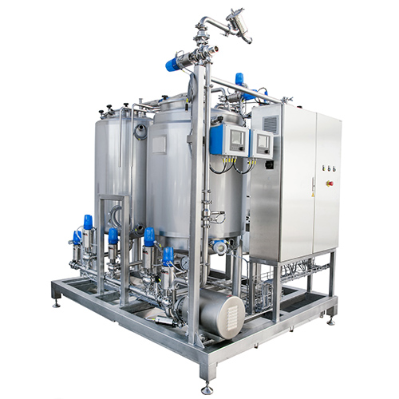

Автоматизация сбора данных по простоям в фармацевтическом производстве
Автор: Шимаров Тихон Сергеевич. Люберецкий техникум имени Ю. А. Гагарина, 2 курс, группа ИС2-25. Специальность 09.02.07 «Информационные системы и программирование».
Сайт демонстрирует учёт времени одного узла, сравнение телеметрии с эталонным профилем и создание карточки для разбора. Прогноз — объяснимая эвристика. Реальные данные предприятия и обученная модель здесь не используются.

Границы демонстрации
Все записи остаются в браузере. Удаление данных сайта удалит журнал. Хэш-цепочка не заменяет независимое хранилище, аутентификацию и валидацию компьютеризированной системы. Сайт не управляет процессом, не подтверждает качество мойки и не выпускает лекарственные серии.